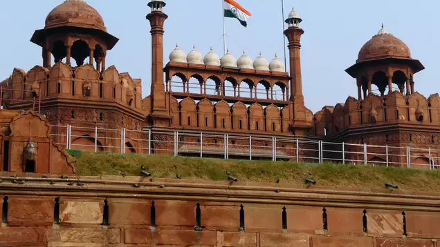
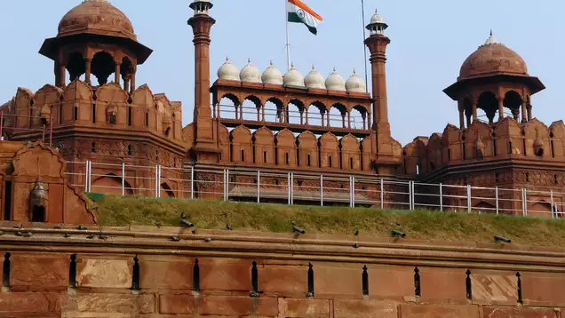

Delhi, officially the National Capital Territory of Delhi (NCT), is the capital city of India. It serves as the political, cultural, and historical heart of the country. Delhi is a vibrant metropolis that blends ancient history with modern development, making it one of the most important and dynamic cities in India.
Here are some key points about Delhi:
1.Geography and Location: Delhi is located in northern India, bordered by the states of Haryana on three sides and Uttar Pradesh to the east. The city is situated on the banks of the Yamuna River.
2.Historical Significance: Delhi has a rich and diverse history, having been the capital of several empires, including the Delhi Sultanate, the Mughal Empire, and later the British colonial administration. Historic landmarks like the Red Fort, Qutub Minar, Humayun's Tomb, and India Gate reflect its deep historical roots.
3.Government and Administration: Delhi serves as the seat of the Indian government, housing the Rashtrapati Bhavan (the President's residence), the Parliament House, and the Supreme Court. It is also the headquarters of various government ministries and agencies.